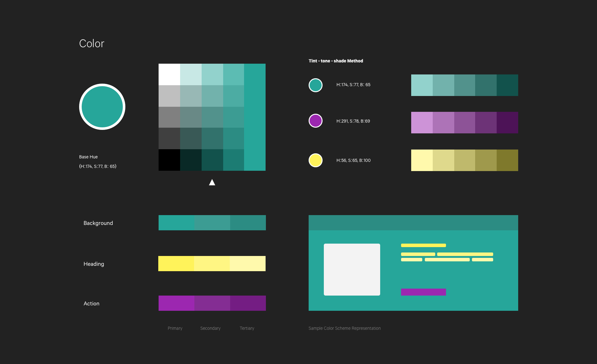

Merken
Design Systems and Front-end Development, Fall 2015.
Introduction
As part of my junior year thesis, this project helped me transition from a developer to a designer. While I loved working on web applications, I began thinking on the 'why' aspect of every design rather than 'what'; why is this application being built, why is it being built in a particular way, and why people would consider using it.
1. Background and Context
The idea was conceived for a couple of reasons, but something personally relevant. As a student myself, I found it extremely hard to memorize stuff that I did not like to study in the first place. There was a dearth of applications that aimed at enhancing learning process and it became evident that there is a need for one, especially to learn the seemingly mundane things, with ease. A simple dive into the current techniques and tips to improve learning like highlighting or rereading the text gave insight as to why they are not as effective as they might seem.
- Highlighting can get in the way of learning; because it draws attention to individual facts, which may act as an impediment in the process of making connections and drawing inferences.
- Nearly as bad is the practice of rereading, a common exercise that is much less effective than some of the better techniques we can use.
2. Methods used
A shift from the norm was evident, therefore after interviewing my peers and conducting some secondary research on the current methods we decided to experiment with the techniques of flashcards and gamification, both of which are explained below.
2.1 Flashcards
Flash cards are designed to enhance and encourage active recall. The format, usually a question on one side of the card and the answer on the other, requires learners to look at one side and recall the information from the other side. Practicing active recall creates stronger neural connections in the brain — making it a very effective method for improving memory. Combined with spaced repetition, it can work wonders.

2.2 Gamification
The second method was gamification - the process of integrating game mechanics to the already existing web/mobile application. It uses data driven techniques and applies them to non-game contexts to increase user engagement. We wanted to start small so we decided to test with a simple timed drag and drop game, that let's user compare their scores with other people.

3. A Design Systems Approach
While solving problems through design it seemed fairly simple to design tailor-made solutions. However, we felt that wouldn't scale well.
"Bespoke design simply doesn't scale."" Design Systems Handbook, inVision
A design system is a collection of reusable components, guided by clear standards, that can be assembled together to build any number of applications. The reason for incorporating such an approach was simple; avoiding design debt by building for short-term, designing consistently, improving usability not just for users but for developers as well (avoiding countless CSS declarations for every element), and finally the added benefit of scaling up.
3.1 A Visual Design Language
Defining a purpose and style of color, typography, icononography, illustrations is essential to create a consistent user experience. We wanted to decide with the overall personality of the application early on in the process as it would help us inform our design choices. When it comes to learning, most of us are familiar with the good old chalkboard; therefore, we decided incorporate the same in our visual design language to have the just the right balance between fun and formal.
3.1.1 Color
Our brains are programmed to reject both under and over stimulating information, so it’s essential to create a color palette that delivers both visual interest and a sense of order. By starting with a base framework and combining tint-tone-shade method to generate different color schemes, we arrived at the color palette shown below.
3.1.2 Typography
The typeface we select has a great impact on both the brand identity as well as the overall user experience. While we initially decided to select one of the familiar font faces (like Roboto, Helvetica etc.) all of them felt a tad too formal and didn't communicate with the overall design language we were trying to express. We finally decided on 'Dosis' typeface, which is rounded Sans-Serif font family. It seemed to have just the right balance between formal and fun.

3.1.3 Illustrations
Illustrations add character to the product. They are also a great way to attract visual interest. But most importantly, illustrations should be designed such that their meaning remains obvious, even without the text, else they become just another source for cognitive load. Finally, they are also a neat way to explain the product intent to new users, and maintain user engagement on empty states, loading screens, modals etc.

3.1.4 Components and Visual Form
While design language is all about the approach and how things look at a visual level, the form brings them together to create a meaning out of it. For the following design, we decided to approach it at an atomic level, starting from the very fundamental units called elements, then moving up towards components, and finally towards layouts and architechture. This technique is called atomic design and it provided us flexibility and time before diving into the entire design altogether.


3.1.5 Final Design
After laying out our design system, it was time to bring the pieces together. With everything clearly defined, creating the final design was a breeze as our design system laid down the guiding path towards the final prototypes and development.


4. Impact
While the overall design outcome was good by then end, we felt me made a couple of assumptions along the design process which were unearthed during the usability test; students found it cumbersome to enter each and every word along with its meaning. We assumed that as users enter their words and meanings to memorize, it'll start fitting them in their memory way before the actual learning begins. Therefore, the next step was introduce something that'll address that pain point. We added a 'Browse' section which allowed users to search for sets that other users have already created and are free to learn.

The project in its very essence was learning about
- How having a visual design language gives your product a personality
- How a design system eases workload not only off a designer's shoulder, but also a developers'
- Design and Development go hand in hand.